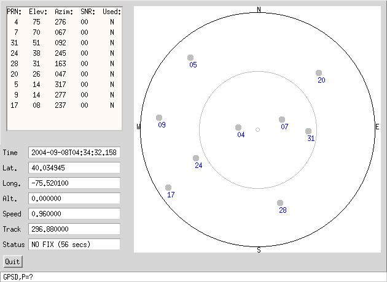
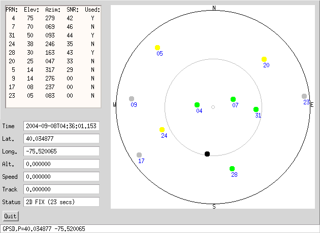

Home
News
Downloads
Mailing lists
Documentation
Screenshots
Recipes
Other GPSDs
Hardware
For GPS Vendors
Wish List
Hall of Shame
Troubleshooting Guide
Hacker's Guide
Application Compatibility History

Included in the package is a sample client called xgps. It
connects to a gpsd at any host you tell it to, and
requests raw data, so that it can display the current location of all
visible GPS satellites your receiver 'sees'.

The GPS receiver has not yet acquired a fix. The receiver has not tracked the grey satellites, but knows where they should be.
The next image shows a good fix. A 3d fix provides latitude, longitude as well as altitude data, and requires at least four good satellites. A 2d fix does not give altitude, but only requires 3 satellites.

Depending on your GPS receiver, the additional satellites may be used to determine location with better accuracy.